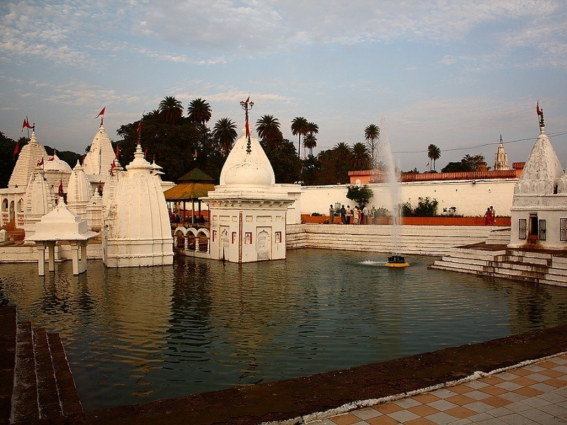
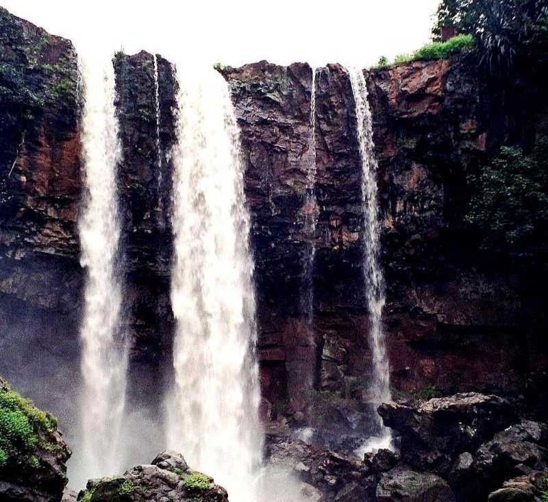
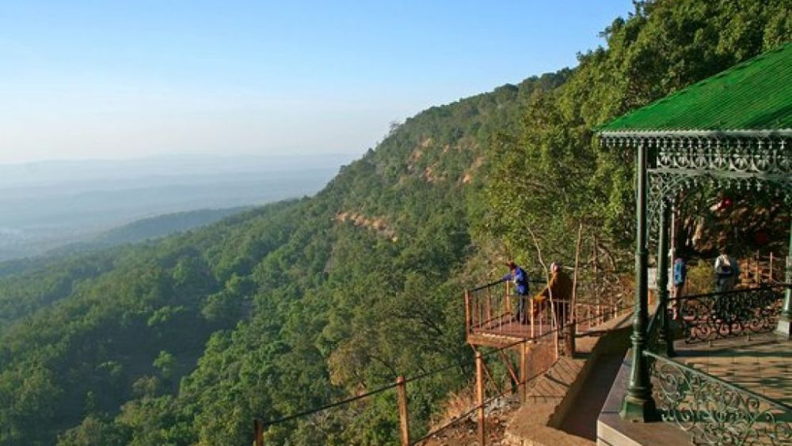
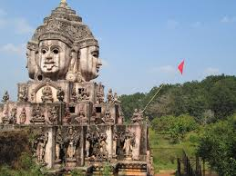

Places to Explore
घूमने के स्थान

The most sacred site in Amarkantak — a divine kund (tank) from which the holy Narmada River originates. Surrounded by a complex of 16 ancient stone temples including Shiva, Radha-Krishna, Durga and Guru Gorakhnat shrines. Thousands of pilgrims gather here every year for Narmada Jayanti. The atmosphere is charged with incense, bells, and the gentle sound of flowing water.
अमरकंटक का सबसे पवित्र स्थल — एक दिव्य कुंड जहाँ से पवित्र नर्मदा नदी निकलती है। 16 प्राचीन मंदिरों से घिरा यह परिसर शिव, राधा-कृष्ण, दुर्गा मंदिरों से युक्त है।

The first and mightiest waterfall on the Narmada, plunging 100 feet into a rocky gorge. Named after Sage Kapil, who meditated here for 12 years and wrote the Sankhya Philosophy treatise. A 500m walk from parking through forested trails.
नर्मदा का पहला और सबसे शक्तिशाली झरना, 100 फुट की ऊँचई से गिरता है। कपिल मुनि ने यहाँ 12 वर्ष ध्यान किया था।

Meaning "flow of milk," this waterfall's froth creates a milky-white cascade over rocky steps. A 1 km forest trek from Kapildhara. Inside the cave here sits a Shivling with water continuously dripping on it — said to be worshipped by Sage Durvasa.
दूध जैसी सफेद धारा के कारण इसे दुग्ध धारा कहते हैं। कपिलधारा से 1 किमी वन ट्रेक पर स्थित। गुफा में शिवलिंग पर निरंतर जल गिरता है।

The birthplace of the Son River, where two ponds — Sona and Bhadra — merge to form the Sonbhadra. Perched at the very edge of Maikal Mountain, the river later forms a 300-foot waterfall. Panoramic views over thick forested valleys.
सोन नदी का उद्गम स्थल, जहाँ सोना और भद्रा कुंड मिलकर सोनभद्र बनाते हैं। मैकल पर्वत के किनारे से 300 फुट का जलप्रपात।

A breathtaking temple of sacred geometry — its architecture forms a three-dimensional Sri Yantra, the geometric form of divine feminine energy. Every surface is carved with intricate precision. One of the most architecturally unique temples in Central India.
पवित्र ज्यामिति का अद्भुत मंदिर — इसकी वास्तुकला त्रि-आयामी श्री यंत्र का रूप धारण करती है। मध्य भारत के सबसे अनूठे मंदिरों में से एक।

Built by Kalachuri Maharaja Karnadeva in the 11th century CE, directly opposite the Narmada Udgam. The Karna Temple towers with an ornate shikhara; the Pancha Math is a row of 5 temples on a single platform. Protected by ASI with manicured lawns.
11वीं सदी में कलचुरी राजा कर्णदेव द्वारा निर्मित। नागर शैली की उत्कृष्ट वास्तुकला। भारतीय पुरातत्व सर्वेक्षण द्वारा संरक्षित।

A serene platform where the great mystic-saint Kabir Das spent years in deep meditation. Surrounded by cascading water and lush wilderness, it remains a place for introspection and spiritual solace for followers from across India.
वह पवित्र स्थल जहाँ महान संत कबीर दास ने वर्षों ध्यान किया था। झरते जल और हरियाली के बीच यह आत्मचिंतन का स्थान है।